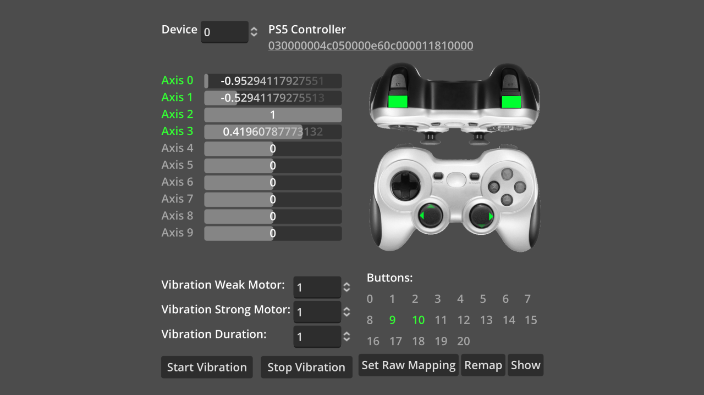
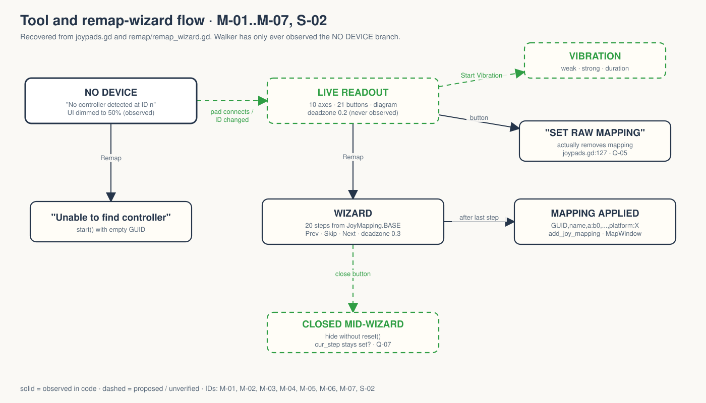
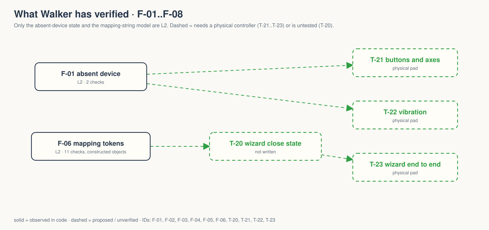

Godot's misc/joypads tool in Walker: live axes and buttons for one device ID, vibration, and a wizard that writes a controller mapping string.
OBSERVED INFERRED MISSING PROPOSED
A tool, not a game. No gate signed. → GDD.md

OBSERVED godot/screenshots/joypads.webp, shipped upstream, not a Walker capture. Walker ran with CONNECTED DEVICES [] (mapping-20260927.log:3).
“A tool for testing joypad input ... and generating controller mapping strings.” project.godot:14, README.md:3-5
Why Walker keeps it, and for whom. MISSING Q-01, Q-02

Only NO DEVICE has ever been observed.
“Set Raw Mapping” joypads.tscn:658 calls Input.remove_joy_mapping(guid) joypads.gd:127.
The effect is raw indices; the action is a removal. Keep, relabel, or explain? Q-05.

Nothing past L2 and neither film can happen until someone names a pad and an afternoon. That is Q-06.